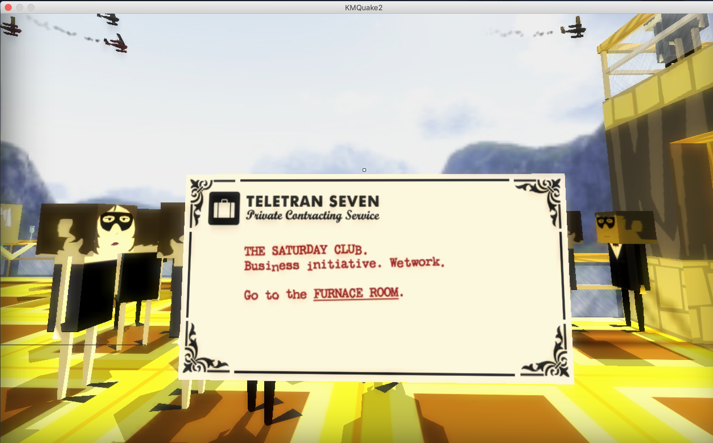
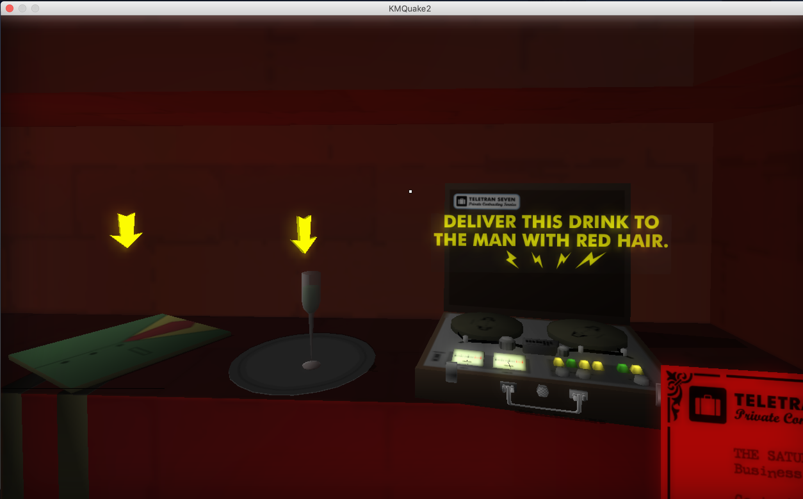
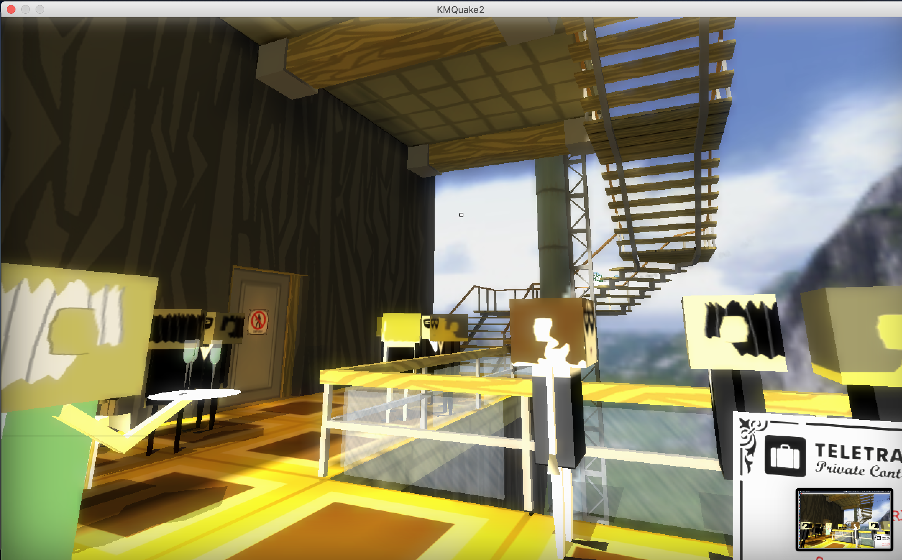
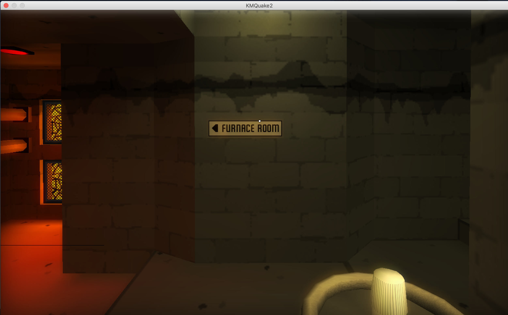
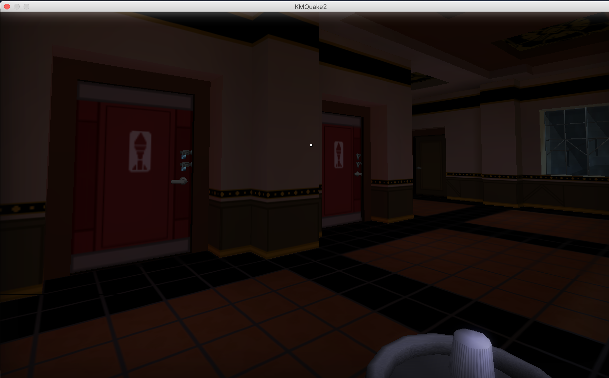
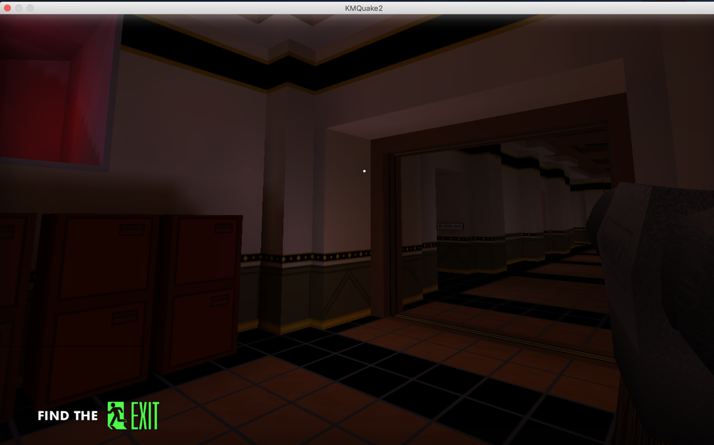
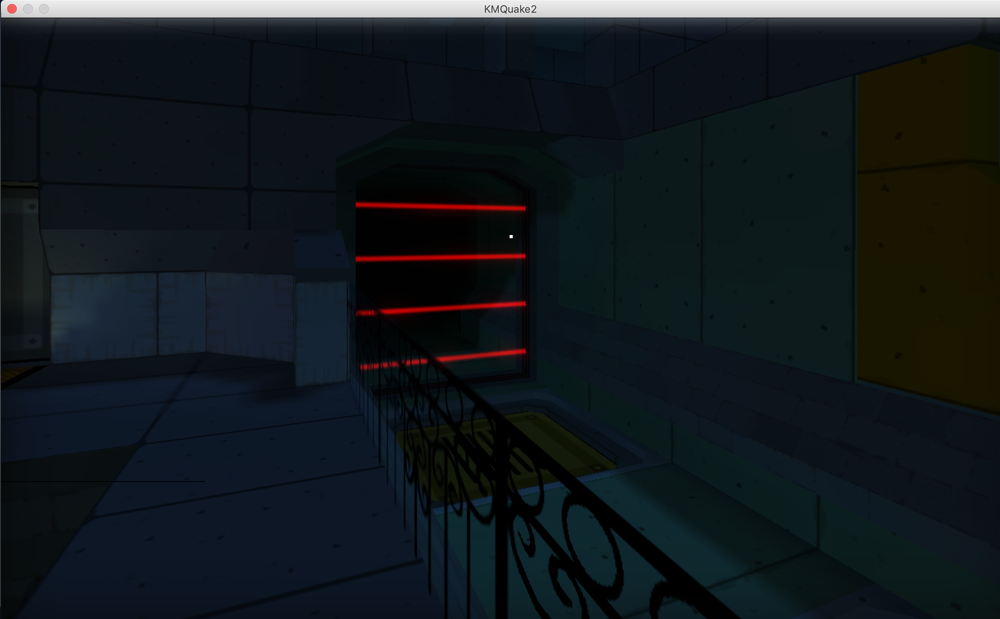
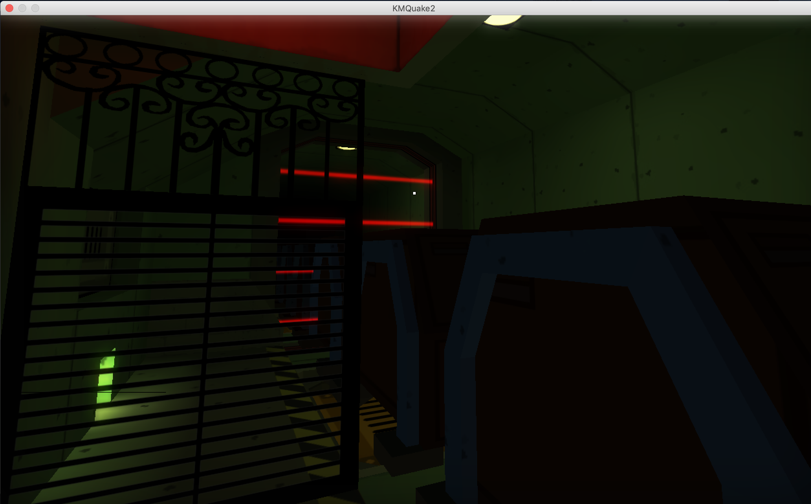
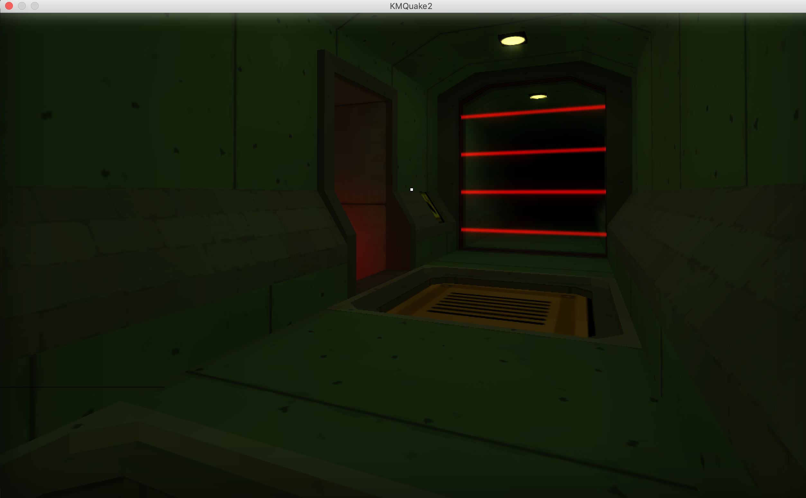
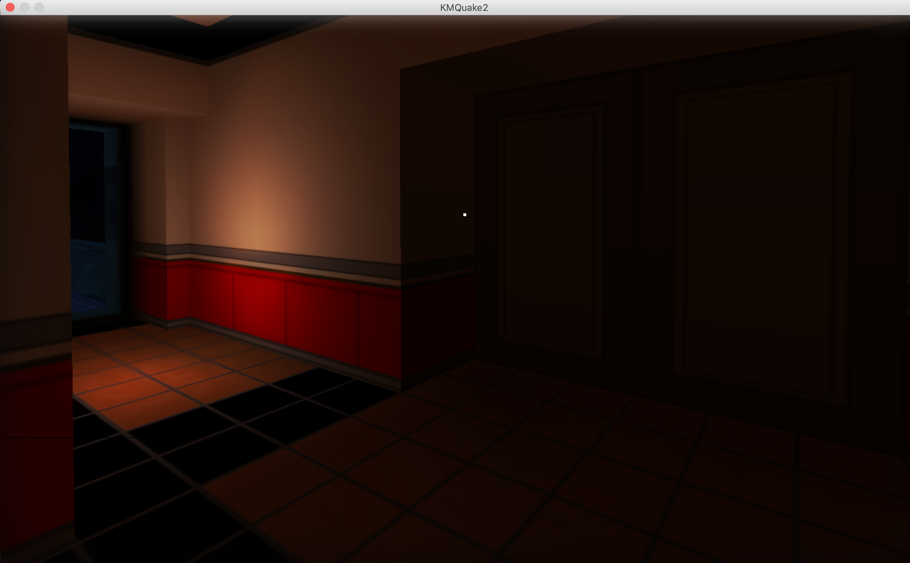

The game starts, I see a sign displaying the controls and a memo card so I try to find the Furnace Room.
I initially turn right, find a door, and learn 'E' opens doors.
The door opens and I find an exit.
I try to press the red button and nothing happens so I leave that room and go up the stairs.
At the top of the stairs a waiter happened to be walking out a room with the same red button so I slip through while the door is open.
In the back of that room I find the Furnace Room, inside there is a sign telling me spacebar is jump, so obviously there must be something I can jump on.
I look and jump around and manage to get on a shelf.
I see a briefcase in the back of the room.
I open the briefcase and it tells me to deliver a drink to a man with red hair.
I grab the drink and a waiter costume. I leave the Furnace Room.
Since I didn't see a man with red hair downstairs I decide to go upstairs.
I immediately find him.
I give him the drink, he chugs it and burps.
Text appears in the bottom left saying find the exit, I realize
that was the room I went to at the beginning.
I also now notice the guy beside the red haired man (probably his bodyguard) was watching me the whole time,
I spend some time playing with him seeing at what range he starts glaring at me (for no reason to be honest).
I go back to the Furnace Room just to see if anything changed (it didn't).
I goto the exit where I can now press the red button.
Contract Complete! $3400 for apparently giving the man a tracker.
New memo card, looks like I'm in a hotel now (70th floor apparently).
I now notice the memo card says "Research snatch, Deep raid"
so now I'm thinking that I'm doing some kind of covert heist.
Gotta find another Furnace Room. I go right, there a locked door,
sounds like it's raining (yup just saw lightning through the window).
I turn around to go left and see the Furnace Room sign.
Just before the Furnace Room is another room with 3 suspicious looking NPCs with suitcases standing outside
and another NPC reading a book while smoking a cigarette (must be the 60s).
I go in the Furnace Room (making sure the door shuts behind me).
It's loud as hell in here.
I see a familiar red light similar to the last Furnace Room.
I notice two crushers I need to get through.
I accidentally fall and get crushed (I blame the controls).
A file loading screen appears and I press load, which apparently restarts the level.
I go straight to the Furnace Room this time and get pass the crushers correctly.
The area with the red light is empty,
I turn around and see an open area on the other side of the crushers,
and a cheeky fence I'll need to hop over.
Luckily I think ive got a handle on the controls now and make it over.
I see some items to pick up.
One looks like a spraycan and the other is a hammer.
I see a door leading to the Furnace Room (I thought I was already in the Furnace Room but ok).
The door is locked with a padlock.
I try using the hammer on it, doesn't work.
I try using the spraycan ( it paints the lock blue).
I try the hammer again, maybe paint does something, it breaks the lock open and the door swings opens.
I go through the door and follow the hallway. At the end of the hallway I find a another locked door/gate.
I spray it first with the paintcan then break it with the hammer.
I see another familiar red glow and discover a briefcase and open it.
It tells me to photograph five birds and gives me a camera.
I take the camera and walk through the door across the hall. Random room with another door up a ramp, I go through it.
Now I'm in a different part of the building. There are locked doors on my left, I try to spray and hammer them, doesn't work.
I turn around and proceed down the hall. Theres 2 double locked doors with what looks like a rocket on them
(doubt there are any birds in there). I continue to an unlocked door which takes me outside.
I walk outside and notice a railcart system above me.
I find another rocket door with 2 locks so I guess I must open them.
I break the locks and find a bird inside!
I take a picture of the bird and as I turn around the bird blows up... What?!
Theres also blueprints on the tables (I guess I only care about the exploding birds)
I decide to go back and unlock the other rocket doors.
Sure enough there are birds in them and I take pictures of them (the bird do a crazy suicide nose dive after you get their pictures).
I check if those first doors are unlocked now, maybe... they aren't.
I go outside again and notice a ledge next to the railing that looks like I can jump onto.
Once on the ledge I notice it now looks like a platformer and I need to jump on the flags and vents to get to the other two birds.
I fall on the last flag jump (I blame the controls).
I make sure to load the Autosave this time.
I make it over this time and notice another door(unlocked).
I decide to go through it before getting the birds and theres 2 double doors on either side and that red glow in a vent.
The doors on the right open to the those double doors that were locked before
The other doors are locked.
I go back to get the 2 bird pictures and text appears in the bottom left to find the exit.
I go through the vent with the red glow and it takes me back to the furnace room.
I go back to the beginning, the 3 NPCs with suitcases are gone and I notice the original evelator is now an exit.
I press the elevator button and get shot in the back, wtf.
Cutscene. Smoking chick traded her book for a gun, takes my camera (The Birds!) and jumps out the window.
I chase after her but she's hella fast. Avoid a railcart and a train. Drop into a dinner party and break all their glasses (sorry not sorry)
Chase her into a corner, she shoots me a couple more times (Oh right the gun), and I fall off a railing.
Cutscenes/Flashbacks. I guess I knew her and saw her die... and she won at track and field.
The End.
The first level has several subtasks that require me to find things such as the Furnace Room or Man with Red Hair.


The first choice I made was which direction to go once out of the elevator.
I went right, therefore I found the exit at the start and knew where to go later on. If someone were to go left first they would not have this info.
The next choice I made was whether to explore upstairs or go through the restricted area door.

I chose to get through the door although if I went upstairs I would have found the red haired man and then knew his location.
The second level also has several subtasks that require me to find things such as, again, a Furnace Room.
The first choice I made was when I had to decide which direction to take after getting passed the crushers.

I chose to go left because I wanted to goto the Furnace Room. If someone decided to go right they would continue
through the game without finding the briefcase and getting the objective.
The second choice I made was to ignore the first two rocket doors

If I didn't ignore these doors I would have found out there were birds in them. But I could go back to get them at any point.
Even If you got the other 3 birds first the game still allows you to get the first two at the end of the platforming part.

This game has very limited interactions making it very easy to keep the narrative on track. Although as a result
it does not allow for much variation and branching, if any at all. Most of the branches I desribed weren't long lasting, you could return to
the point you had to make the decision and pick the other, such as choosing right or left. To ensure the narrative stayed on
track the developers would lock doors, hide doors, add barricades, or just kill you if you strayed to far.




The graphical quality is actually good, in a weird way. The characters are blocky and the textures are flat but oddly it seems to fit with the amount of story you're given. The setting of the game gave off a kinda of 60's vibe, everyone dress in suits on a Saturday, Old fashion planes flying in the background, casually smoking indoors. These graphics made the story a little bit more understandable, things like why a radio in a briefcase is telling you to make some guy drink a bug or using a old-school camera to take pictures of exploding birds. Okay made not that understandable, but it gave the game a great setting that helped give the player an immersive experience into the story.
As I said before the amount of interaction was very limited. Most of the interaction felt somewhat forced, you couldn't deviate from the narrative as every interation was designed to get you from point A to point B. The first level was a sort of tutorial so I won't say much about those interactions. but in the second level the path you take is essentially set in stone. As soon as you get off the elevator there is only one choice you have, one door you're allowed to enter. Sure you can try opening the other doors or talk to the NPCs, but none of those interactions actually do anything, much less change the story. From then on you're force to follow a certain path, you could just go off and explore, but you will eventually have to go back and continue the story. The interaction with the locks and using the hammer and spray might give you a sense of accomplishment in solving that tiny puzzle, but that feeling is short-lived when you realize the game is literally telling you "I just gave you some items, use them." Getting over the platforming part was fun, but again it was a path which forced you to go one way. The nature of the interaction in this game influenced the player to such an extent that I felt as though I could have watched a short animation and had the same experience.